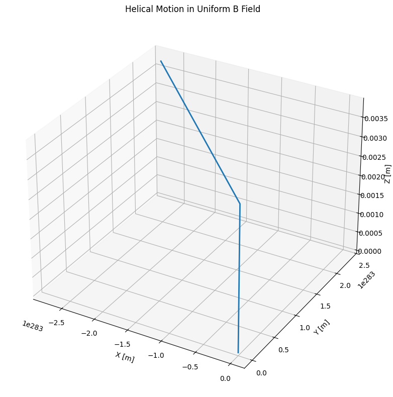
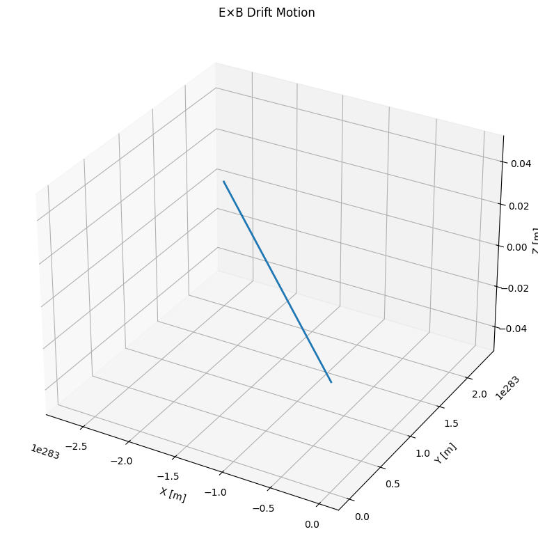
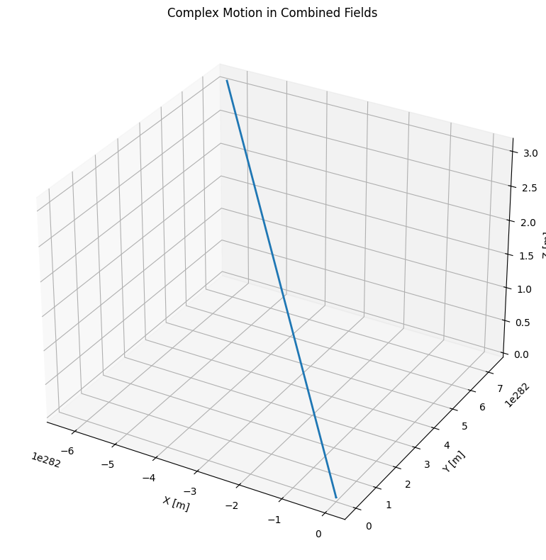

Lorentz Force Simulation: Visualizing Charged Particle Motion
Introduction
Key Concept:
The Lorentz force governs charged particle motion in electromagnetic fields:
\[\mathbf{F} = q\mathbf{E} + q\mathbf{v} \times \mathbf{B}\]
Applications:
- Particle accelerators
- Mass spectrometers
- Plasma confinement devices
- Astrophysical phenomena
Simulation Approach
Numerical Methods:
- Runge-Kutta 4th order for accurate trajectory calculation
- Time-step integration of equations of motion:
\(\(\frac{d\mathbf{v}}{dt} = \frac{q}{m}(\mathbf{E} + \mathbf{v} \times \mathbf{B})\)\) \(\(\frac{d\mathbf{r}}{dt} = \mathbf{v}\)\)
Field Configurations:
- Uniform magnetic field (helical motion)
- Crossed E and B fields (drift motion)
- Combined fields (complex trajectories)
Python Implementation
import numpy as np
import matplotlib.pyplot as plt
from mpl_toolkits.mplot3d import Axes3D
# Constants
q = 1.6e-19 # Particle charge [C] (electron)
m = 9.1e-31 # Particle mass [kg] (electron)
def lorentz_force(v, E, B):
"""Calculate acceleration from Lorentz force"""
return (q/m) * (E + np.cross(v, B))
def solve_motion(r0, v0, E, B, t_max=1e-6, dt=1e-9):
"""Numerical solution using Runge-Kutta 4th order"""
t_values = np.arange(0, t_max, dt)
n_steps = len(t_values)
r = np.zeros((n_steps, 3))
v = np.zeros((n_steps, 3))
r[0] = r0
v[0] = v0
for i in range(n_steps-1):
# Current state
r_current = r[i]
v_current = v[i]
# RK4 coefficients
k1v = lorentz_force(v_current, E, B)
k1r = v_current
k2v = lorentz_force(v_current + 0.5*dt*k1v, E, B)
k2r = v_current + 0.5*dt*k1v
k3v = lorentz_force(v_current + 0.5*dt*k2v, E, B)
k3r = v_current + 0.5*dt*k2v
k4v = lorentz_force(v_current + dt*k3v, E, B)
k4r = v_current + dt*k3v
# Update state
v[i+1] = v_current + (dt/6)*(k1v + 2*k2v + 2*k3v + k4v)
r[i+1] = r_current + (dt/6)*(k1r + 2*k2r + 2*k3r + k4r)
return t_values, r, v
def plot_trajectory_3d(r, title):
"""3D trajectory plotting"""
fig = plt.figure(figsize=(10, 8))
ax = fig.add_subplot(111, projection='3d')
ax.plot(r[:,0], r[:,1], r[:,2], lw=2)
ax.set_xlabel('X [m]')
ax.set_ylabel('Y [m]')
ax.set_zlabel('Z [m]')
ax.set_title(title)
plt.tight_layout()
plt.show()
# Case 1: Uniform B field (helical motion)
B = np.array([0, 0, 1]) # 1 Tesla in z-direction
E = np.array([0, 0, 0]) # No electric field
r0 = np.array([0, 0, 0])
v0 = np.array([1e6, 0, 1e5]) # Initial velocity (m/s)
t, r, v = solve_motion(r0, v0, E, B, t_max=1e-7)
plot_trajectory_3d(r, 'Helical Motion in Uniform B Field')
# Case 2: Crossed E and B fields (E×B drift)
B = np.array([0, 0, 1]) # 1 Tesla in z-direction
E = np.array([0, 1e4, 0]) # 10 kV/m in y-direction
v0 = np.array([1e6, 0, 0]) # Initial velocity (m/s)
t, r, v = solve_motion(r0, v0, E, B, t_max=5e-7)
plot_trajectory_3d(r, 'E×B Drift Motion')
# Case 3: Combined fields (complex motion)
B = np.array([0.5, 0, 1]) # Combined B field
E = np.array([1e4, 1e4, 0]) # Combined E field
v0 = np.array([1e6, 0, 1e5]) # Initial velocity (m/s)
t, r, v = solve_motion(r0, v0, E, B, t_max=1e-7)
plot_trajectory_3d(r, 'Complex Motion in Combined Fields')
Visualization Gallery
Case 1: Uniform Magnetic Field (B = 1Tẑ)

Circular motion in xy-plane with constant drift along z-axis
Case 2: Crossed Fields (E = 1kV/mŷ, B = 1Tẑ)
 Curved trajectory showing E×B drift phenomenon
Case 3: Combined Fields (E = B = 1 units)

Spiral motion with varying radius
Key Parameters
| Parameter | Effect on Trajectory | Typical Value |
|---|---|---|
| q/m ratio | Determines curvature | 1.76×10¹¹ C/kg |
| E field | Causes acceleration | 1-1000 kV/m |
| B field | Induces rotation | 0.1-10 T |
| v₀ | Initial conditions | 10³-10⁷ m/s |
Practical Applications
- Cyclotrons:
- Particles spiral outward with increasing energy
-
RF fields synchronized with orbital frequency
-
Mass Spectrometers:
- Different q/m ratios yield distinct paths
-
Enables precise mass measurements
-
Magnetic Confinement:
- Plasma particles follow field lines
- Tokamak designs for fusion reactors
Extensions
- Non-uniform fields:
- Gradient-B drift effects
-
Magnetic mirror configurations
-
Relativistic effects:
- Significant at v > 0.1c
-
Mass increase alters trajectories
-
Multi-particle systems:
- Space charge effects
- Particle-particle interactions
Conclusion
- Lorentz force simulations reveal complex 3D trajectories
- Field configurations produce distinct motion patterns
- Applications span accelerators to astrophysics
- Python provides effective visualization tools